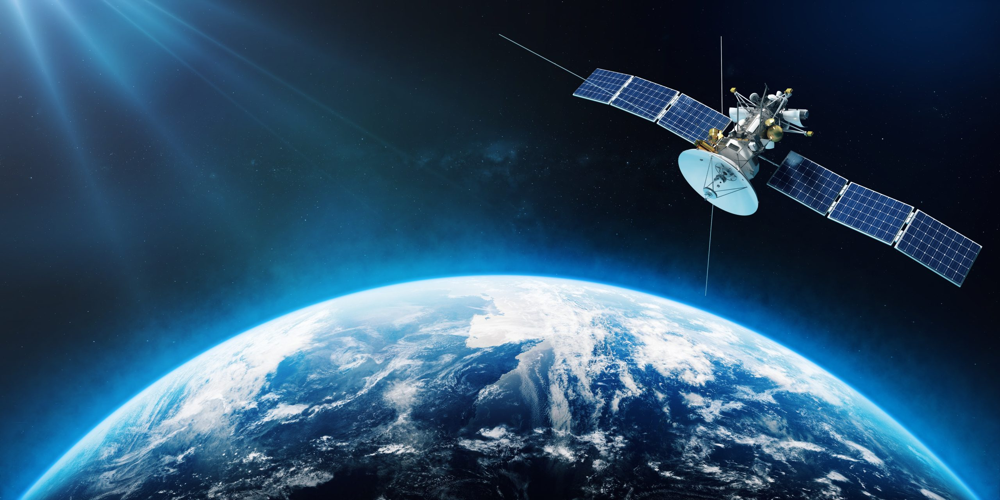

India has made significant contributions to satellite technology, particularly through projects like
GSAT
(Communication Satellite) and NAVIC (India's regional GPS system).
These
advancements have had a
profound
impact on weather prediction, navigation, and disaster management across India.
GSAT Series:
The GSAT series are communication satellites that also contribute to weather forecasting and monitoring.
Through the INSAT system, India can track weather patterns, monitor cyclones,
and
predict
monsoon patterns, which are critical for agriculture and disaster preparedness.
Weather Monitoring and Forecasting: GSAT monitor weather conditions,
including
temperature, humidity, and
atmospheric pressure. They help generate accurate weather forecasts and track weather systems such as
cyclones, storms, and monsoons.
Cyclone tracking:Satellites like GSAT-19 and GSAT-30 track tropical storms
and cyclones, providing
real-time
data for early warnings and evacuations.
Agricultural Support: weather data collected is crucial for agriculture,
helping farmers prepare for
changes in weather patterns like rainfall and drought.
NAVIC series:
India developed NAVIC, a regional satellite navigation system, to provide precise positioning services
across India and surrounding regions.NAVIC is just like GPS, but it is more accurate.
NAVIC offers an accurate positioning service with an accuracy of 20 meters. It also enhances
navigation
for
road vehicles, ships and aircraft, ensuring better safety and operational efficiency. It is especially
useful in areas where GPS signals may be weak or unavailable.
Shipping Industry: For the Indian Navy and commercial shipping, NAVIC ensures secure navigation in
national
waters and reduces the risk of accidents or loss of vessels.
NAVIC’s regional focus ensures that India has complete control over its navigation infrastructure, a
crucial
advantage in terms of national security and strategic operations.
India's contribution shows that GSAT and NavIC have had a profound impact on the country’s
technological,
economic, and social development. By advancing in space technology, India has made significant progress
in
weather forecasting, navigation, and disaster management, while also improving national security,
infrastructure, and public safety.
